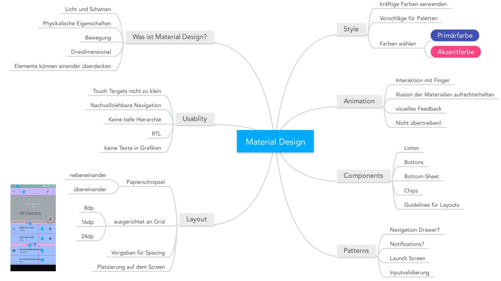
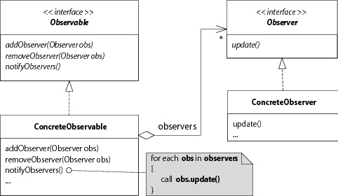

Summary Android
Android Basics
Android Basics
- Java 7 auf Android
- Activities sind ~"Screens"
- Apps werden automatisch geschlossen
- Allgemein wird der Lifecylce stark vom System gesteuert
- Eine Activity sollte eine einzelne Aufgabe realisieren
Activity Lifecycle
- Activity kann sich in verschiedenen Zuständen befinden: Wird gestartet, ist aktiv, wird in den Hintergrund gehen, etc.
- Die einzelnen Methoden werden überschrieben (z.B.
onCreate()) - Start einer Activity:
onCreate(),onStart(),onResume(), erst dann ist sie interagierbar - Wird eine Activity überdeckt, wird sie pausiert
onPause(). Kommt sie wieder in den Vordergrund, wird nuronResume()aufgerufen onDestroy()könnte auch direkt anderen Zuständen aufgerufen werden!- Bei Konfigurationsänderungen wird die Activity neu gestartet (zerstört und neu aufgebaut). Also auch z.B. beim Drehen des Screens!
- Daten in
onPause()sichern, daonStop()undonDestroy()nicht zwingend aufgerufen werden - Activities werden in einem Stack verwaltet (muss nicht von gleicher App sein)
- Der Back-Button poped normalerweise die oberste Activity auf dem Stack
- Eine Gruppe von Activities (= Activity Stack) heissen "Task"
- Eine geöffnete App ist ein Task, bzw. ist ein Eintrag im "Overview Screen" ein Task
- Mit Launch-Modes kann das Verhalten von Tasks verändert werden

Systemsicht
- Pro APK wird ein Prozess mit einem Thread gestartet
- Jede APK wird unter eigenem Linux User installiert
- APKs sind quasi JARs (= Zip-Files)
Intents
- Alle Intents werden über das System verwaltet
- Expliziter Intent: Eine bestimmte Klasse ansprechen
- Impliziter Intent: z.B. "Absicht, Bild aufzunehmen"
- Explizite Intents normalerweise für interne Activities, implizite für generische Aktionen
Grundlagen GUI
- Eine View ist immer eine Rechteckige Fläche, für die die View verantwortlich ist
- Widgets sind fertige Komponenten (buttons, images, checkboxes, ...)
- ViewGroup ist eine Unterklasse von View
- Layouts können ineinander verschachtelt werden (auch unterschiedliche)
match_parent: Nimm den ganzen Platz einwrap_content: Nur so viel Platz wie nötig- Linear-Layout: Wenn kein Gewicht angegeben wird, wird möglichst wenig Platz verwendet. Mit Gewicht entsprechend dem Werten (mehr Gewicht -> mehr Platz)
- Neu gibt es
ConstraintLayout, das auf den GUI-Builder optimiert wurde. Ist allerdings noch in Alpha - Die
RKlasse enthält Konstanten für alle XML-Files im res-Ordner (wird vom Compiler generiert) und bildet dessen Ordnerstruktur ab @+ist die Definition einer Ressource,@ein Verweis daraufmipmap: Launcher-Icon der App- Strings mit
getString(R.string.string_name)abrufen dimens.xmlenthält Dimensionen für Layouts, z.B.16dpund werden über einen Namen aufgerufendp: Density-independent-pixels: Unabhängig von Screen-dpi. Der Basis-Faktor wird von 160dpi berechnet ("mdpi")- Für verschiedene Screen-Grössen, Sprachen, Versionen, etc. werden verschiedene XML-Files angelegt
Events
- Die App hat nach den Lifecycle-Aufrufen keine Kontrolle mehr. Das System sendet Events (ausgelöst durch User oder z.B. Sensoren), die dann behandelt werden (Event-Listener)
- Auch Widgets können Events auslösen (->
TextWatcher) - Nur der Main-Thread darf das GUI verändern
button.setOnClickListener(new View.OnClickListener() { @Override public void onClick(View v) { … } });
Strukturierung und Navigation
Navigations-Design
- Für einen ersten App-Entwurf ein Domain-Modell erstellen
- "Screen Map" - Beziehungen zwischen Screens erstellen
- Screens gruppieren, z.B. mehrere Screens mit Tabs (Panes) trennen
- Navigation: Parent-Child-Beziehung (Hierarchisch) oder "lateral Navigation" (zwischen zwei Kindern)
- Beispiel HSR-App: Home -> Cafeteria ist hierarchisch, einzelne Wochentage lateral
- Back-Button macht "zeitliche Navigation" (vorheriges Kind oder Parent)
- Button oben links sollte immer zum Parent zurück gehen
- Für eine Gesamtübersicht Wireframes / Storyboards erstellen
Fragments
- Es kann nur immer eine Activity gleichzeitig aktiv sein.
- Fragment hat eigenen Lifecycle

- Ein Fragment kann in mehrere Activities eingebunden werden und eine Activity kann mehrere Fragments beinhalten
- Kann zur Laufzeit in Activity eingebunden (
onAttach()) und wieder entfernt werden (onDetach())
public class MainFragment extends Fragment { OnItemSelected callback; @Override public View onCreateView(LayoutInflater inflater, ViewGroup container, Bundle savedInstanceState) { return inflater.inflate(R.layout.fragment_main, container, false); } @Override public void onAttach(Context activity) { super.onAttach(activity); if (!activity instanceof OnItemSelected) { throw new AssertionError( "Activity must implement OnItemSelected!"); } callback = (OnItemSelected) activity; } }
- Fragments können fix eingebunden werden, direkt als
<fragment>Tag im XML der Activity (mitnamedie Klasse angeben). Der Code der Activity ändert sich dabei nicht
<LinearLayout ...> <fragment android:id="@+id/fragment" android:name="com.example.myfragmentapplication.MainActivityFragment" android:layout_width="match_parent" android:layout_height="match_parent" tools:layout="@layout/fragment_main" /> </LinearLayout>
- Oder dynamisch: Normalerweise mit Frame-Layout
<LinearLayout ...> <FrameLayout android:id="@+id/fragment_container" android:layout_width="match_parent" android:layout_height="match_parent" /> </LinearLayout>
public class MainActivity extends Activity implements OnItemSelected { @Override protected void onCreate(Bundle savedInstanceState) { super.onCreate(savedInstanceState); setContentView(R.layout.activity_main); FragmentManager fragmentManager = getFragmentManager(); FragmentTransaction fragmentTransaction = fragmentManager.beginTransaction(); MainActivityFragment fragment = new MainActivityFragment(); fragmentTransaction.add(R.id.fragment_container, fragment); fragmentTransaction.commit(); } // Implement Callback method }
- Im Unterschied zur Activity wird hier das Fragment selbst instanziert
- Fragment sollte unabhängig von der Activity sein
- Zur Kommunikation zwischen Fragment und Activity definiert das Fragment ein Interface, dass die Activity implementiert
Master-Detail Navigation
- Ein Pattern, z.B. eine Liste mit Mails -> einzelne Mail
- z.B. hat das Phone-Design nur ein einzelnes Fragment pro Activity, das Tablet-layout zeigt beide Layouts auf der gleichen Activity an
- Wenn Activity einen Einstiegspunkt in die App sein kann, muss es eine Activity sein, kein Fragment
Menüs
Programmatisch:
public boolean onCreateOptionsMenu(Menu menu) { menu.add(0, START_MENU_ITEM, 0, "Start"); menu.add(0, SUBMIT_MENU_ITEM, 0, "Submit"); return true; } public boolean onOptionsItemSelected(MenuItem item) { switch (item.getItemId()) { case START_MENU_ITEM: // handle start return true; case SUBMIT_MENU_ITEM: // handle submit return true; } return super.onOptionsItemSelected(item); }
- Deklarativ: als menu-File in XML (besser)
<menu xmlns:android="http://schemas.android.com/apk/res/android" xmlns:tools="http://schemas.android.com/tools" tools:context=".MainActivity"> <item android:id="@+id/action_search" android:title="@string/action_search" android:icon="@drawable/ic_action_search" android:orderInCategory="100" android:showAsAction="never" /> <item android:id="@+id/action_settings" android:title="@string/action_settings" android:orderInCategory="100" android:showAsAction="never" /> </menu>
- Einbinden mit
getMenuInflater().inflate(id, Menu)in deronCreateOptionsMenu()Methode - Mit dem "PreferenceScreen" kann ein Settings-Menü gebaut werden
- Auch das Fragment kann ein Menü steuern
- Nach Android 5.0 ist die "ActionBar" deprecated, neu ist die "Toolbar"
- Navigation Drawer ("Hamburger Menu") hat schlechte usability
Listen und Persistenz
Listen
- ListView
<ListView android:layout_width="match_parent" android:layout_height="match_parent" android:id="@+id/listView"/>
- Die ListView nutzt einen Adapter über ein Interface, der die Klassen an das Interface anpasst
- Adapter muss wissen, wieviele Elemente es gibt (
getCount()) und ein bestimmtes Element zurückgeben (getView()) - Layout der jeweiligen Einträge sind in eigenem Layout definiert
getView()in eigenem Adapter überschreiben
public View getView(int position, View convertView, ViewGroup parent) { final Module module = modulList.get(position); if (convertView == null) { LayoutInflater layoutInflater = (...) getSystemService(Context.LAYOUT_INFLATER_SERVICE); convertView = layoutInflater.inflate(R.layout.rowlayout, null); } // Get views with findViewByID, display data and set listeners return convertView; }
- An einer View kann ein Tag angehängt werden (beliebiges
Object) - Für Performance-Optimierung:
findViewByID()nur beim ersten Mal aufrufen und im Tag speichern
if (convertView == null) { ... TextView textView = (TextView) convertView.findViewById(R.id.textView); CheckBox checkBox = (CheckBox) convertView.findViewById(R.id.checkBox); Pair<TextView, CheckBox> views = new Pair<>(textView, checkBox); convertView.setTag(views); } Pair<TextView, CheckBox> views = (Pair<TextView, CheckBox>) convertView.getTag(); TextView textView = views.first; CheckBox checkBox = views.second;
Recycler View
- In
RecyclerViewist die Optimierung bereits eingebaut- In
onBindViewHolder()sind die UI-Elemente schon drin im ViewHolder und müssen nur noch abgefüllt werden - Variante mit ListView quasi aufgeteilt in zwei Methoden
- In
public class MyAdapter extends RecyclerView.Adapter<ViewHolder> { private ArrayList<Module> dataset; public MyAdapter(ArrayList<Module> modules) { dataset = modules; } @Override public ViewHolder onCreateViewHolder(ViewGroup parent, int viewType) { LayoutInflater layoutInflater = LayoutInflater.from(parent.getContext()); View v = layoutInflater.inflate(R.layout.rowlayout, parent, false); TextView textView = (TextView) v.findViewById(R.id.textView); CheckBox checkBox = (CheckBox) v.findViewById(R.id.checkBox); ViewHolder viewHolder = new ViewHolder(v, textView, checkBox); return viewHolder; } @Override public void onBindViewHolder(ViewHolder holder, int position) { final Module module = dataset.get(position); holder.textView.setText(" (" + module.getCode() + ")"); holder.checkBox.setText(module.getName()); holder.checkBox.setChecked(module.isSelected()); } @Override public int getItemCount() { return dataset.size(); } }
public class ViewHolder extends RecyclerView.ViewHolder { public View parent; public TextView textView; public CheckBox checkBox; public ViewHolder(View parent, TextView textView, CheckBox checkBox) { super(parent); this.parent = parent; this.textView = textView; this.checkBox = checkBox; } }
Persistenz
onSaveInstanceState()speichert per default alle Views mit einer ID im Bundle gespeichert- Wird aber nicht immer ausgeführt (z.B. über Back-Button verlassen)
onCreate()erhält das Bundle vononSaveInstanceState()super.onCreate(savedInstanceState)speichert alle Views, die eine ID haben- Konsequenz: Daten immer in
onPause()sichern - Shared Preferences (nur bool, float, int, long, String, Set
)
SharedPreferences settings = getSharedPreferences(PREFS_NAME, MODE_PRIVATE); SharedPreferences.Editor editor = settings.edit(); editor.putBoolean("disabled", false); boolean isDisabled = settings.getBoolean("disabled", false); editor.commit();
- Andere Möglichkeiten: Auf Filesystem oder SQLite sichern
- SQLite Helper trackt die Version. Wenn z.B. das Schema geändert wird, kann bei einem Update der App eine neue Version angegeben werden, um die Daten zu migrieren (in
onUpgrade)
Hintergrundaktionen
- Mit
Runnabledie Methoderun()überschreiben - Einen neuen Threat starten
public void onClick(View v) { Runnable runnable = new Runnable() { @Override public void run() { final Bitmap bitmap = download("http://slow.hsr.ch/hsr_cat.bmp"); Runnable command = new Runnable() { @Override public void run() { imageView.setImageBitmap(bitmap); } }; imageView.post(command); // command wird im GUI-Thread ausgeführt } }; Thread thread = new Thread(runnable); thread.start(); }
- Views dürfen nur aus dem Main-Thread verändert werden, darum
imageView.post(). Dies setzt einen neuen Task in die Event-Queue - OK für einfache Tasks, besser mit AsyncTask
onPreExecute(): Vorbereitung im UI-ThreaddoInBackground(): In eigemen Thread ausgeführtonPostExecute(): Resultat setzen, wieder im GUI-Thread
class DownloadBitmapTask extends AsyncTask<String, Void, Bitmap> { @Override protected void onPreExecute() { super.onPreExecute(); } @Override protected Bitmap doInBackground(String... params) { return download(params[0]); } @Override protected void onPostExecute(Bitmap bitmap) { imageView.setImageBitmap(bitmap); } } new DownloadBitmapTask().execute("http://slow.hsr.ch/hsr_cat.bmp");
Material Design

Patterns & Serivces
UI Patterns
- Multitier Architecture
- Aufteilung in (typisch) 3 Layer: Presentation, Domain, Data
- Presentation ist verantwortlich für die Darstellung, hat auf Domain Zugriff
- Domain enthält Business Logik und Domain Klassen
- Data implementiert die Speicherung der Daten und stellt sie der Domain zur Verfügung
- Keine Zyklen erlaubt
- Observer-Pattern verwenden

- Android basiert lose auf MVC, die View ist aber nicht sauber vom Controller gekapselt (Activity)
Services
- Muss im Manifest deklariert werden
<application> <service android:name=".ExampleService" android:exported="false" /> </application>

- Einmaliger Task -> started Service
- Läuft im Hintergrund und wird nicht gestoppt, auch wenn die App pausiert / gestoppt wird
- Läuft im gleichen Thread wie das UI!
- Starten über einen Intent
startService(intent) onStartCommand()überschreiben, um Task auszuführen- mit
stopSelf()im Service stoppen - IntentService kommuniziert über Intents, wird dann im
onHandleIntent()abgearbeitet - Stellt einen Worker Thread zur Verfügung
- Problem: Wie kann der Service die Activity benachrichtigen? -> Broadcasts oder "pending Intent"
- Client-Server-Kommunikation -> bound service
- Auch über einen Intent gestartet
- Gibt Interface, über den kommuniziert werden kann
- AsyncTask: Aufgabe von Main-Thread entkoppeln. Kombinieren mit Services, um GUI-Thread nicht zu blockieren
- Beide Möglichkeiten brauchen dieselbe Service-Klasse
Broadcast Receiver
- Das System versendet Meldungen als Intents
- z.B low battery, Power connected, boot completed, etc.
- Registrierung
- Statisch im Manifest mit einem intent-Filter
- Dynamisch über einen
LocalBroadcastManager
- Eigene Broadcasts versenden mit
sendBroadcast(intent) - Es können auch Broadcasts innerhalb der App versendet werden
- Receiver können statisch oder dynamisch registriert werden:
LocalBroadcastManager lbm = LocalBroadcastManager.getInstance(getApplicationContext()); IntentFilter filter = new IntentFilter(Intent.ACTION_BOOT_COMPLETED); MyBroadcastReceiver receiver = new MyBroadcastReceiver(this); lbm.registerReceiver(receiver, filter);
private class MyBroadcastReceiver extends BroadcastReceiver { public MyBroadcastReceiver(MainActivity activity) { } @Override public void onReceive(Context context, Intent intent) { } }
Weiterführende Themen
Sensoren
- Unterstützung von Gerät zu Gerät verschieden
- Qualität der Daten sehr unterschiedlich
- Sensordaten unterschiedlich zu interpretieren
- Delay gibt an, wie häufig Daten abgefragt werden (braucht entsprechend mehr oder weniger Strom)
sensorManager = (SensorManager) getSystemService(Context.SENSOR_SERVICE); lightSensor = sensorManager.getSensorList(Sensor.TYPE_LIGHT).get(0); // Prüfen, ob Sensor existiert! ... // onResume(): sensorManager.registerListener(this, lightSensor, SensorManager.SENSOR_DELAY_NORMAL); // Im onPause listener wieder abmelden ... @Override public void onSensorChanged(SensorEvent event) { textView.setText(String.format("Helligkeit: %.0f", event.values[0])); }
Dependency Injection
- Problem: Klasse ist von einer anderen direkt abhängig und instanziert diese (z.B. wird eine Server-Adresse gesetzt)
- Schlecht testbar mit einem Fake-Server
- Lösungsansatz: Klasse braucht ein Interface, dass dann z.B. von einem richtigen Service und einem "Fake"-Service implementiert wird
- Implementation
- Instanzierung im Konstruktor
- Builder-Pattern (z.B. wie AlertDialog)
- Dagger 2 Framework
- Bringt zentrale Konfiguration und einfachere Testbarkeit, aber ist mehr Schreibaufwand
- View Injection
- Mit 3rd-Party-Library "Butterknife"
- Macht binds anhand von annotierten attributen und methoden
Data Binding
- Idee: im XML direkt auf Objekte zugreifen, damit es sich von selbst aktualisiert ("XML ist der Observer")
layout-Tag als Root-Element, spezifisches Layout darin verschachtelt- Im layout gibt es einen
<data>Block mit Variablen-Namen und Typen - Zugriff im Layout mit
@(<expression>) - Es wird eine Klasse generiert, z.B.
ActivityMainBinding, über den das Data-Binding gemacht werden kann - Klasse bietet Setter-Methoden für die Variablen
- Auch Listener können direkt im layout gebindet werden
- Um Views automatisch zu aktualisieren,
ObservableField<T>verwenden - Aufpassen, dass nicht zuviel Logik ins XML kommt